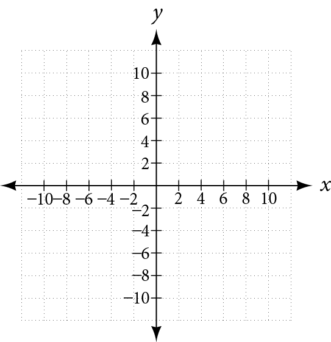
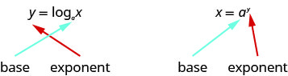
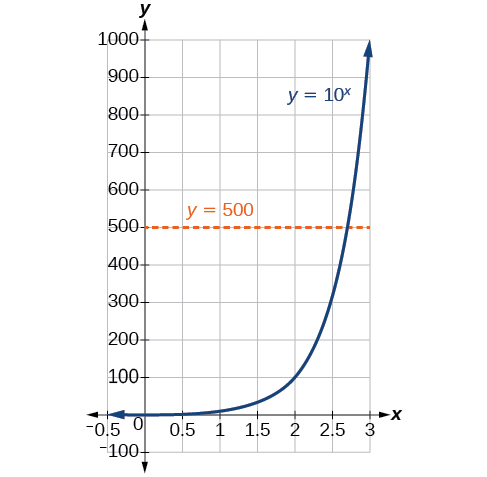

The original, as published: OpenStax, Precalculus 2e, Abramson et al., section 4.3 Logarithmic Functions. © Rice University. CC BY-NC-SA 4.0, https://creativecommons.org/licenses/by-nc-sa/4.0/. Imported as published, from https://openstax.org/books/precalculus-2e/pages/4-3-logarithmic-functions
Graph the exponential function by making a table.

Find the inverse of
| Rewrite with | |
| Interchange the variables and . | |
| Solve for . | Oops! We have no way to solve for . |
Since the equations and are equivalent, we can go back and forth between them. This will often be the method to solve some exponential and logarithmic equations. To help with converting back and forth, let’s take a close look at the equations. Notice the positions of the exponent and base.

If we remember the logarithm is the exponent, it makes the conversion easier. You may want to repeat, “base to the exponent gives us the number.”
Convert between exponential and logarithmic form.
ⓐ Convert to logarithmic form:
Identify the base and the exponent: the base is 2 and the exponent is 3.
Then we have .
ⓑ Convert to exponential form:
Identify the base and the exponent: the base is b and the exponent is a.
Then we have .
Convert between exponential and logarithmic form.
Remember these logarithmic notations to help complete the following:
Common Logarithm
Natural Logarithm
Convert to logarithmic form.
Convert to exponential form.
We can solve and evaluate logarithmic equations by using the technique of converting the equation to its equivalent exponential form.
Find the value of x: ⓐ ⓑ and ⓒ
ⓐ
| Convert to exponential form. | |
| Solve the quadratic. | |
| The base of a logarithmic function must be positive, so we eliminate . |
ⓑ
| Convert to exponential form. | |
| Simplify. |
ⓒ
| Convert to exponential form. | |
| Rewrite as . | |
| With the same base, the exponents must be equal. |
Evaluate each of the following.
In 2010, a major earthquake struck Haiti, destroying or damaging over 285,000 homes (http://earthquake.usgs.gov/earthquakes/eqinthenews/2010/us2010rja6/#summary. Accessed 3/4/2013.). One year later, another, stronger earthquake devastated Honshu, Japan, destroying or damaging over 332,000 buildings, (http://earthquake.usgs.gov/earthquakes/eqinthenews/2011/usc0001xgp/#summary. Accessed 3/4/2013.) like those shown in . Even though both caused substantial damage, the earthquake in 2011 was 100 times stronger than the earthquake in Haiti. How do we know? The magnitudes of earthquakes are measured on a scale known as the Richter Scale. The Haitian earthquake registered a 7.0 on the Richter Scale (http://earthquake.usgs.gov/earthquakes/eqinthenews/2010/us2010rja6/. Accessed 3/4/2013.) whereas the Japanese earthquake registered a 9.0. (http://earthquake.usgs.gov/earthquakes/eqinthenews/2011/usc0001xgp/#details. Accessed 3/4/2013.)
The Richter Scale is a base-ten logarithmic scale. In other words, an earthquake of magnitude 8 is not twice as great as an earthquake of magnitude 4. It is times as great! In this lesson, we will investigate the nature of the Richter Scale and the base-ten function upon which it depends.
In order to analyze the magnitude of earthquakes or compare the magnitudes of two different earthquakes, we need to be able to convert between logarithmic and exponential form. For example, suppose the amount of energy released from one earthquake were 500 times greater than the amount of energy released from another. We want to calculate the difference in magnitude. The equation that represents this problem is where represents the difference in magnitudes on the Richter Scale. How would we solve for
We have not yet learned a method for solving exponential equations. None of the algebraic tools discussed so far is sufficient to solve We know that and so it is clear that must be some value between 2 and 3, since is increasing. We can examine a graph, as in , to better estimate the solution.

Estimating from a graph, however, is imprecise. To find an algebraic solution, we must introduce a new function. Observe that the graph in passes the horizontal line test. The exponential function is one-to-one, so its inverse, is also a function. As is the case with all inverse functions, we simply interchange and and solve for to find the inverse function. To represent as a function of we use a logarithmic function of the form The base logarithm of a number is the exponent by which we must raise to get that number.
We read a logarithmic expression as, “The logarithm with base of is equal to ” or, simplified, “log base of is ” We can also say, “ raised to the power of is ” because logs are exponents. For example, the base 2 logarithm of 32 is 5, because 5 is the exponent we must apply to 2 to get 32. Since we can write We read this as “log base 2 of 32 is 5.”
We can express the relationship between logarithmic form and its corresponding exponential form as follows:
Note that the base is always positive.
Because logarithm is a function, it is most correctly written as using parentheses to denote function evaluation, just as we would with However, when the input is a single variable or number, it is common to see the parentheses dropped and the expression written without parentheses, as Note that many calculators require parentheses around the
We can illustrate the notation of logarithms as follows:
Notice that, comparing the logarithm function and the exponential function, the input and the output are switched. This means and are inverse functions.
A logarithm base of a positive number satisfies the following definition.
For
where,
Also, since the logarithmic and exponential functions switch the and values, the domain and range of the exponential function are interchanged for the logarithmic function. Therefore,
Can we take the logarithm of a negative number?
No. Because the base of an exponential function is always positive, no power of that base can ever be negative. We can never take the logarithm of a negative number. Also, we cannot take the logarithm of zero. Calculators may output a log of a negative number when in complex mode, but the log of a negative number is not a real number.
Given an equation in logarithmic form convert it to exponential form.
Write the following logarithmic equations in exponential form.
First, identify the values of Then, write the equation in the form
Here, Therefore, the equation is equivalent to
Here, Therefore, the equation is equivalent to
Write the following logarithmic equations in exponential form.
To convert from exponents to logarithms, we follow the same steps in reverse. We identify the base exponent and output Then we write
Write the following exponential equations in logarithmic form.
First, identify the values of Then, write the equation in the form
Here, and Therefore, the equation is equivalent to
Here, and Therefore, the equation is equivalent to
Here, and Therefore, the equation is equivalent to
Write the following exponential equations in logarithmic form.
Knowing the squares, cubes, and roots of numbers allows us to evaluate many logarithms mentally. For example, consider We ask, “To what exponent must be raised in order to get 8?” Because we already know it follows that
Now consider solving and mentally.
Even some seemingly more complicated logarithms can be evaluated without a calculator. For example, let’s evaluate mentally.
Given a logarithm of the form evaluate it mentally.
Solve without using a calculator.
First we rewrite the logarithm in exponential form: Next, we ask, “To what exponent must 4 be raised in order to get 64?”
We know
Therefore,
Solve without using a calculator.
(recalling that )
Evaluate without using a calculator.
First we rewrite the logarithm in exponential form: Next, we ask, “To what exponent must 3 be raised in order to get ”
We know but what must we do to get the reciprocal, Recall from working with exponents that We use this information to write
Therefore,
Evaluate without using a calculator.
Sometimes you may see a logarithm written without a base. When you see one written this way, you need to look at the expression before evaluating it. It may be that the base you use doesn't matter. If you find it in computer science, it often means . However, in mathematics it almost always means the common logarithm of 10. In other words, the expression often means
A common logarithm is a logarithm with base We can also write simply as The common logarithm of a positive number satisfies the following definition.
For
We read as, “the logarithm with base of ” or “log base 10 of ”
The logarithm is the exponent to which must be raised to get
Currently, we use as the common logarithm, as the binary logarithm, and as the natural logarithm. Writing without specifying a base is now considered bad form, despite being frequently found in older materials.
Given a common logarithm of the form evaluate it mentally.
Evaluate without using a calculator.
First we rewrite the logarithm in exponential form: Next, we ask, “To what exponent must be raised in order to get 1000?” We know
Therefore,
Evaluate
Given a common logarithm with the form evaluate it using a calculator.
Evaluate to four decimal places using a calculator.
Rounding to four decimal places,
Note that and that Since 321 is between 100 and 1000, we know that must be between and This gives us the following:
Evaluate to four decimal places using a calculator.
The strength of one earthquake was 500 times greater than the strength of another. The equation represents this situation, where is the difference in magnitudes on the Richter Scale. To the nearest thousandth, what was the difference in magnitudes?
We begin by rewriting the exponential equation in logarithmic form.
Next we evaluate the logarithm using a calculator:
The difference in magnitudes was about
The amount of energy released from one earthquake was times greater than the amount of energy released from another. The equation represents this situation, where is the difference in magnitudes on the Richter Scale. To the nearest thousandth, what was the difference in magnitudes?
The difference in magnitudes was about
The most frequently used base for logarithms is the value of which is approximately . Base logarithms are important in calculus and some scientific applications; they are called natural logarithms. The base logarithm, has its own notation,
Most values of can be found only using a calculator. The major exception is that, because the logarithm of 1 is always 0 in any base, For other natural logarithms, we can use the key that can be found on most scientific calculators. We can also find the natural logarithm of any power of using the inverse property of logarithms.
A natural logarithm is a logarithm with base We write simply as The natural logarithm of a positive number satisfies the following definition.
For
We read as, “the logarithm with base of ” or “the natural logarithm of ”
The logarithm is the exponent to which must be raised to get
Since the functions and are inverse functions, for all and for
Given a natural logarithm with the form evaluate it using a calculator.
Evaluate to four decimal places using a calculator.
Rounding to four decimal places,
Evaluate
It is not possible to take the logarithm of a negative number in the set of real numbers.
Access this online resource for additional instruction and practice with logarithms.
| Definition of the logarithmic function | For if and only if |
| Definition of the common logarithm | For if and only if |
| Definition of the natural logarithm | For if and only if |
What is a base logarithm? Discuss the meaning by interpreting each part of the equivalent equations and for
A logarithm is an exponent. Specifically, it is the exponent to which a base is raised to produce a given value. In the expressions given, the base has the same value. The exponent, in the expression can also be written as the logarithm, and the value of is the result of raising to the power of
How is the logarithmic function related to the exponential function What is the result of composing these two functions?
How can the logarithmic equation be solved for using the properties of exponents?
Since the equation of a logarithm is equivalent to an exponential equation, the logarithm can be converted to the exponential equation and then properties of exponents can be applied to solve for
Discuss the meaning of the common logarithm. What is its relationship to a logarithm with base and how does the notation differ?
Discuss the meaning of the natural logarithm. What is its relationship to a logarithm with base and how does the notation differ?
The natural logarithm is a special case of the logarithm with base in that the natural log always has base Rather than notating the natural logarithm as the notation used is
For the following exercises, rewrite each equation in exponential form.
For the following exercises, rewrite each equation in logarithmic form.
For the following exercises, solve for by converting the logarithmic equation to exponential form.
For the following exercises, use the definition of common and natural logarithms to simplify.
For the following exercises, evaluate the base logarithmic expression without using a calculator.
For the following exercises, evaluate the common logarithmic expression without using a calculator.
For the following exercises, evaluate the natural logarithmic expression without using a calculator.
For the following exercises, evaluate each expression using a calculator. Round to the nearest thousandth.
Is in the domain of the function If so, what is the value of the function when Verify the result.
No, the function has no defined value for To verify, suppose is in the domain of the function Then there is some number such that Rewriting as an exponential equation gives: which is impossible since no such real number exists. Therefore, is not the domain of the function
Is in the range of the function If so, for what value of Verify the result.
Is there a number such that If so, what is that number? Verify the result.
Yes. Suppose there exists a real number such that Rewriting as an exponential equation gives which is a real number. To verify, let Then, by definition,
Is the following true: Verify the result.
Is the following true: Verify the result.
No; so is undefined.
The exposure index for a camera is a measurement of the amount of light that hits the image receptor. It is determined by the equation where is the “f-stop” setting on the camera, and is the exposure time in seconds. Suppose the f-stop setting is and the desired exposure time is seconds. What will the resulting exposure index be?
Refer to the previous exercise. Suppose the light meter on a camera indicates an of and the desired exposure time is 16 seconds. What should the f-stop setting be?
The intensity levels I of two earthquakes measured on a seismograph can be compared by the formula where is the magnitude given by the Richter Scale. In August 2009, an earthquake of magnitude 6.1 hit Honshu, Japan. In March 2011, that same region experienced yet another, more devastating earthquake, this time with a magnitude of 9.0. (http://earthquake.usgs.gov/earthquakes/world/historical.php. Accessed 3/4/2014.) How many times greater was the intensity of the 2011 earthquake? Round to the nearest whole number.
common logarithm the exponent to which 10 must be raised to get is written simply as
logarithm the exponent to which must be raised to get written
natural logarithm the exponent to which the number must be raised to get is written as